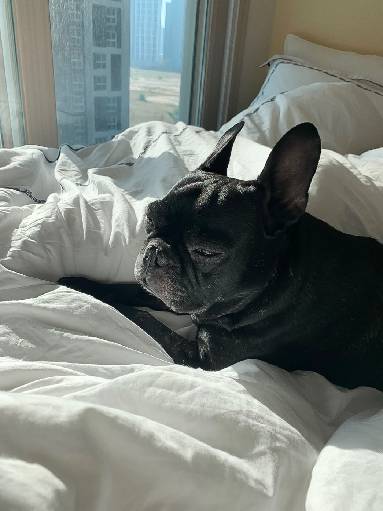

| 구분 | 내용 |
|---|---|
| 이름 | 쿤 |
| 출생년도 | 2016.07.21 |
| 성별 | 여자 |
| 성격 | 조용하고 소심한 성격으로 혼자있는걸 좋아함 따뜻한 곳이나 햇빛쬐는 것을 즐겨하며 실외 배변만 하는 깔끔한 성격으로 하루 2번 산책은 필수 ! |
| 구분 | 내용 |
|---|---|
| 이름 | 탄 |
| 출생년도 | 2016.05.26 |
| 성별 | 남자 |
| 성격 | 장난꾸러기에 터그 놀이를 좋아함 에너지가 넘치고 애교가 많아 졸졸 따라다니며 자주 붙어있음 야채, 채소를 잘 먹으며 편식이 없는 사나이 ! |